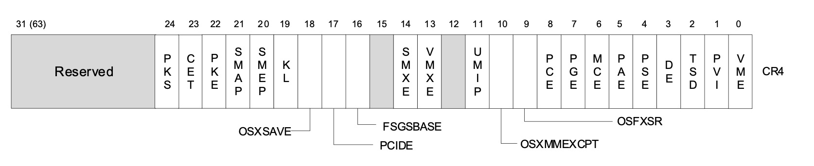

上一篇文章简单介绍了本书的一些符号管理，从而方便后面的学习，本文主要对IA-32的系统架构进行一个概括性的总览。IA-32架构为操作系统和系统开发软件提供了广泛的支持，比如支持保护模式，实模式，虚拟8086模式，系统管理模式(SMM)多种工作模式。其中一些模式被称为遗留模式，Intel 64架构支持几乎所有IA-32中编程架构设施，并且将其扩展到支持64位编程环境的新操作模式(IA-32e模式)，IA-32e模式允许软件在下面两个子模式下运行
- 64位模式: 支持64位操作系统和应用
- 兼容模式: 允许大多数遗留软件运行，它与64位操作系统下的64位软件共存
概述
IA-32系统级别的架构提供了对一下功能的支持
- 内存管理
- 软件保护模式
- 多任务
- 异常和中断处理
- 多处理器
- 高速缓存管理
- 硬件资源和电源管理
- 调试和性能监控
其中很多系统级的架构特点只能被系统程序使用，理解了这些能够帮助应用程序开发人员开发出更加健壮安全的软件。另外，后面的内容包括后面的文章，大多集中介绍IA-32架构保护模式下的行为，对于64位架构下的IA-32e模式，当它的某些实现和IA-32保护模式不同时，也会进行简单介绍。值得一提的是，所有的64位或者IA-32处理器在通电或者重置后都处于实模式下，软件需要进行额外的操作对处理器进行初始化，使其进入保护模式，同样的，如果需要IA-32e模式的操作，软件需要通过设置将处理器切换到IA-32e模式。
系统级架构概览
系统级架构包含包括一系列寄存器，数据结构和指令用来支持基本的系统级操作，比如内存管理，异常和中断处理，任务管理以及多处理器技术等。
IA-32系统级寄存器与数据结构
如图是IA-32系统级寄存器与数据结构概览图，现在只需要有个印象就好，问后续的文章会对其中的每一个部分进行详细说明
IA-32e模式(4级分页)
如图是64位架构下的系统级寄存器与数据结构图，其中展示的是4级分页
GDT/LDT表(Global and Local Descriptor Tables)
在保护模式下，所有的内存访问都必须通过全局描述符表(GDT)或者局部描述符表(LDT)来实现，这两个表可以理解为一个数组，数组的每一项被称为段描述符,每个段描述符描述了一个段的基地址、段限长、访问权限、类型以及其他一些信息。每个段描述符都会有一个相关联的段选择子， 段选择子，顾名思义就是用来选择段的，可以简单的将段选择子理解为段描述符在GDT/LDT中的索引，软件程序通过这个选择子就能够在GDT/LDT中找到指定的段描述符，然后通过段描述符就能够找到指定段的基地址(线性地址)。为了简单化描述，这里省略了一些权限校验以及对GDT/LDT选择的细节
如果想访问段中的一个字节，那么必须提供段选择子 + 偏移值，上面说过，段选择子能够最终确定一个段的线性基地址，那么再加上偏移值，就能够得到字节的线性地址。如果没有开启分页，那么我们就得到了要访问字节的物理地址，如果开启了分页，那么还要对线性地址进行进一步处理得到实际的物理地址(如果不了解线性地址和物理地址以及分页，这都不重要，后面会细说)。
本节最开始提到过，保护模式下任何对内存的访问都必须通过GDT/LDT，那问题来了: 我们知道GDT/LDT也是位于内存中的数据结构，我们要想访问GDT/LDT，总得先知道它们具体在哪，这是怎么实现的呢？其实也很简单，IA-32提供了两个专用寄存器，来存储这两个表的基地址(这里也是线性地址)
- GDTR: 存储GDT表的线性基地址
- LDTR: 存储LDT表的线性基地址
IA-32e下的GDT/LDT表(Global and Local Descriptor Tables in IA-32e Mode)
在IA-32e的两个子模式下，GDTR和LDTR都被扩展到了64位；
GDT/LDT表在64位模式下被扩展，以支持64位基地址(16字节的LDT描述符保存64位基地址和各种属性, IA-32模式下只有8个字节)。在兼容模式下，描述符不被扩展。
系统段，段描述符与门(System Segments, Segment Descriptors, and Gates)
系统段
除了代码段，数据段和堆栈段这种组成程序运行环境的段，架构还定义了两个系统段
- 任务状态段(TSS - Task-State-Segment)
- LDT段
GDT不算一个段，因为它不是通过段选择子和段描述符来访问的，而是直接通过GDTR访问，而TSS段和LDT段都需要通过段选择子在GDT中找到相应的段描述符来访问
门
架构同样定义了一些特殊的段描述符，这些描述符被称为门(调用门、中断们、陷阱门以及任务门)，这些门位系统程序提供了受保护的关口，这类系统程序可能和普通的应用程序在不同的特权级别上运行。比如：对一个调用门的调用可以使当前应用程序访问特权值相同或更小(特权级别相同或更高)的程序。想要通过调用门访问特定程序，当前程序必须提供调用门的段选择子，然后处理器会对调用门进行访问权限检查，比较当前程序的CPL(CS的后两位)和调用门描述符中段选择子的RPL(后两位)一个调用门描述符中的DPL(用来指示目标代码段的特权等级)。来决定是否能够访问目标代码(实际的检查情况比较复杂，这里先放一个链接,后续文章会进一步详细介绍特权检查)
如果特权检查通过，那么此时就能够跳转到目前代码中执行，需要注意的是，如果目标代码的特权级和当前程序的特权级不一样(特权级发生了变化)，那么连带着栈也需要变化(通过当前任务的TSS获取当前程序在目标代码特权级别上的栈)。
IA-32e模式下的门(Gates in IA-32e Mode)
在IA-32e模式下，下面几种类型的描述符被扩展到16字节表示(IA-32保护模式下是8字节):
- LDT段描述符
- 64位TSS段描述符
- 调用门
- 中断们
- 陷阱门
调用门促进了64位模式和兼容模式之间的转换，IA-32e模式下不支持任务门。并且在特权级切换时，堆栈段选择子(SS寄存器中的值)并不是从TSS中读取，相反的，它被设置为0(和IA-32有所不同，参考链接，需要注意的是GDT的第一个描述符是不用的，此时将堆栈段选择子设置为0，也就是指向了GDT的第一个段描述符)
TSS段与任务门(Task-State Segments and Task Gates)
TSS定义了一个任务的执行环境状态，记录了通用寄存器状态，段寄存器状态，EFLAGS寄存器状态，EIP寄存器状态以及任务在不同特权级下的堆栈状态(SS和SP)。另外TSS同样包含了任务相关的LDT表的段选择子和任务相关页表的基地址。
所有在保护模式下的程序，都运行在一个被称为当前任务的任务上下文中，当前任务的TSS段的段选择子被存储在TR(Task Register)中。最简单的任务方式就是使用call/jmp指令，并且附带上新任务的TSS段选择子，此时处理器会做如下操作
- 将当前任务的状态保存到当前任务相关的TSS段中
- 将新任务的TSS段选择子加载到TS寄存器中
- 通过TSS端选择子在GDT中查找TSS段描述符，然后通过该描述符获取到新任务的TSS段
- 使用新任务的TSS段加载新的上下文：加载通用寄存器，段寄存器，LDTR，CR3寄存器(页表基地址)，EFLAGS寄存器，EIP寄存器
- 开始执行新的任务
也可以通过任务门来访问一个任务，任务门和调用门相似，不同之处在于任务门提供了目的任务的TSS段选择子而调用门提供了目标代码段
IA-32e模式下TSS段寄存器(Task-State Segments in IA-32e Mode)
IA-32e模式不支持硬件任务切换(上面的方式就是硬件任务切换)，但是TSS仍然存在，TSS段的基地址由其段描述符指定
64位的TSS保存有如下对于64位平台很重要的信息
- 不同特权级的堆栈指针
- 中断堆栈表的指针
- IO权限位图的偏移地址(相对于TSS段基地址)
同样的TR寄存器也被扩展从而支持IA-32e模式
异常与中断处理(Interrupt and Exception Handling)
外部中断，软件中断和异常都通过中段描述符表(IDT)来处理，IDT存储了用于访问异常与中断处理过程的门描述符，和GDT一样，IDT不算段，IDT的基地址被存储在IDTR中。
IDT中可以有中断门，陷阱门和任务门；想要访问异常与中断处理过程，处理器首先需要从内部硬件、外部中断控制器或者通过INT n指令等获取一个中断向量，中断向量可以简单理解为IDT表的一个索引，通过它可以找到指定的门描述符。如果是中断门或陷阱门，处理程序的访问方式类似于通过调用门调用一个程序；如果是任务门，那么会进行任务切换
IA-32e模式下的异常与中断处理(Interrupt and Exception Handling IA-32e Mode)
在IA-32e模式下门描述符被扩展到了16字节，同样的IDTR也被扩展用以支持64位地址，并且该模式下不支持任务门(可能是因为几乎没有操作系统使用Intel提供的TSS来进行硬件切换，都采用软件切换的方式)
内存管理(Memory Management)
平台支持直接物理内存管理和虚拟内存(通过分页实现虚拟内存)。
- 当使用物理内存时(即不开启分页)，此时线性地址等同于物理地址
- 当开启分页时，所有的代码、数据、堆栈以及系统寄存器(包括GDT和IDT)通过分也只保留最近访问过的页面在内存中
当开启分页时，物理内存中的页面包含在分页结构中，这些结构驻扎在内存中。页表的基地址保存在CR3寄存器中，页表的每一项决定了页框的物理基地址、访问权限以及内存管理信息
在开启分页时，线性地址被拆分成多个部分(如前图所示)，通过这样的转换方式最终能够得到实际的物理地址
IA-32e模式下的内存管理(Memory Management in IA-32e Mode)
在IA-32e模式下，最多能够支持5级页表结构
系统寄存器(System Registers)
为了协助初始化处理器和控制系统操作，架构平台提供了一系列系统标志和若干个系统寄存器，其中系统标志存储在EFLAGS寄存器中。
- EFLAGS寄存器中的系统标志和IOPL域，控制着任务和模式切换、中断处理、指令追踪以及访问权限
- 控制寄存器(CR0/2/3/4)包含各种数据和控制字段，用于控制系统级操作，这些寄存器中其他标志被用来表示操作系统或执行过程中特定处理器能力的支持
- 调试寄存器(前图中没有列出)允许在调试软件和系统程序内设置断点
- GDTR、LDTR和IDTR寄存器包含了它们各自表结构的线性地址(及限长等)
- 任务寄存器TR包含了当前任务的TSS段选择子
- 特定模式寄存器(图中未列出)
模式相关寄存器主要包含一组用于操作系统的寄存器(特权级0下运行)，这些寄存器控制着像调试扩、性能监控计数器、机器检测架构和内存类型范围(MTRRs)。
大多数系统严格限制了应用程序对系统寄存器的访问(除了EFLAGS寄存器)，当然系统可以将所有应用程序都运行在特权级0上，这样所有应用程序都能够访问这些系统寄存器了
IA-32e下的系统寄存器(System Registers in IA-32e Mode)
在IA-32e模式下，GDTR、LDTR、IDTR、TR都被扩展用来支持64位地址，EFLAGS和CR0-4也被扩展。同时新增了CR8寄存器， CR8提供了对任务优先级寄存器（TPR）的读写权限，这样操作系统就可以控制外部中断的优先级等级。还有一些其他的区别，这里不做赘述。
其他系统资源(Other System Resources)
除了前面描述的系统级寄存器和数据结构，架构平台还提供了下面几种额外资源
- 操作系统指令
- 性能监控计数器：性能监测计数器是事件计数器，可以通过编程来计算处理器事件，如解码的指令数量、收到的中断数量或缓存加载的数量。
- 内部高速缓存和缓冲区：处理器提供了几个内部缓存和缓冲器。缓存用于存储数据和指令；缓冲区用于存储诸如系统和应用程序段的解码地址以及等待执行的写操作。
操作模式(MODES OF OPERATION)
IA-32提供了三种操作模式和一种准操作模式
保护模式
这是处理器原生的操作模式，它提供了一套丰富的架构功能、灵活性、高性能和对现有软件基础的向后兼容性。
实地址模式
主要是为了兼容8086处理器
系统管理模式(SMM)
该模式不做过多介绍，日常基本都是使用保护模式
虚拟8086模式
在保护模式下，处理器支持虚拟8086这种准操作模式，该模式允许处理器在保护、多任务环境下执行8086程序
IA-32e模式(x86-64模式)
前面说到，该模式有两个子模式，分别是64位模式和兼容性模式
不同模式之间的切换图如下所示
- 处理器通电时或者重置后处于实地址模式，CR0中的PE控制着实地址模式与保护模式之间的切换
- EFLAGS中的VM标志控制着保护模式与虚拟8086模式之间的切换
- 其他的如图所示，不做过多介绍
EFLAGS寄存器中的系统标志与IOPL域(SYSTEM FLAGS AND FIELDS IN THE EFLAGS REGISTER)
EFLAGS寄存器中的系统标志和域控制着I/O、可屏蔽硬件中断、调试、任务切换以及虚拟8086模式。只有特权代码(通常是操作系统)有权修改这些标志
EFLAGS寄存器内容
如图所示
TF(Interrupt enable bit9)
控制着对可屏蔽硬件中断请求的响应
- 置位：能够对可屏蔽外部中断进行响应
- 置零：屏蔽掉可屏蔽外部中断
需要注意的是TF标志不会影响异常的产生和不可屏蔽中断(NMI)。CPL、IOPL以及CR4寄存器中的VME标志决定了TF标志能否被CLI、STI、POPF、POPFD以及IRET指令修改
IOPL(I/O privilege level field bit 12 and 13)
表明了当前任务或程序的I/O特权级别，当前任务的CPL必须小于等于IOPL(特权级高于IOPL)才能够访问IO地址空间。只有当前任务的CPL为0时POPF和IRET指令才能够修改IOPL(即只有最高特权级的程序能够修改IOPL)。IOPL也是控制修改IF标志的机制之一，当虚拟模式扩展生效时（当CR4.VME=1时），在虚拟8086模式下处理中断。
NT(Nested task bit14)
控制被中断和被调用任务的链接。处理器在调用一个由CALL指令、中断或异常启动的任务时设置这个标志。它在用IRET指令启动的任务返回时检查和修改这个标志。这个标志可以用POPF/POPFD指令明确地设置或清除；然而，改变这个标志的状态可以在应用程序中产生不可预期的异常。
在保护模式下，表明当前执行的任务嵌套在另一个任务中，控制中断返回指令IRET的执行，具体规则如下
- NT置位：任务被嵌套，通过任务转换实现中断返回
- NT置零：任务不被嵌套，用堆栈中保存的值恢复EFLAGS、CS和EIP，执行常规的中断返回操作
RF(Resume bit16)
该标志和调试寄存器一起使用实现断点调试，控制处理器对指令断点的响应
- 置位：暂时禁用指令断点产生调试异常(#DE)，但是其它异常情况仍可以产生异常
- 置零：指令断点产生调试异常。
RF 标志的主要功能是许可从调试异常（调试断点引发的）后面的那个指令开始继续执行。调试软件必须在用IRETD 指令返回到被中断程序之前，将栈中的EFLAGES 映象中的该位置为1，以阻止指令断点产生另外的调试异常。在返回并成功执行断点指令之后，处理器会自动清零该位，从而许可继续产生指令断点故障(链接)。
VM(Virtual-8086 mode bit17)
前面提到的，控制着保护模式与虚拟8086模式之间的切换
AC(Alignment check or access control bit 18)
只有当AC和CR0标志中的AM标志位同时置位时候才会启用对其检查，对其检查异常只会在用户模式(特权级3)下产生，默认为特权级0下的内存饮用，比如加载段描述符，即使是由用户模式下执行的指令引起的，也不会产生异常
IA-32e模式下的系统标志和域(System Flags and Fields in IA-32e Mode)
- EFLAGS寄存器被扩展
- 不允许设置VM标志因为不支持虚拟8086模式
- 处理器不会设置NT标志，处理器允许软件进行设置，但是在执行IRET指令时如果发现NT被置位则会产生通用保护异常(GP)
- 在IA-32e模式下，SYSCALL/SYSRET指令有一种可编程的方法来指定RFLAGS/EFLAGS中哪些位被清除。这些指令保存/恢复EFLAGS/RFLAGS。
内存管理寄存器(MEMORY-MANAGEMENT REGISTERS)
处理器提供了4个用于内存管理的寄存器，这四个寄存器中存放着分段内存管理相关的数据结构，这四个寄存器分别是:GDTR、LDTR、IDTR和TR。它们的内容如下图所示
GDTR
GDTR寄存器中存储的有GDT表的基地址(保护模式下是32bits, IA-32e模式下扩展到64bits)以及16bits长度的段限长，注意，这里的基地址指的是线性地址。当处理器刚通电或者被reset之后，GDTR的基地址部分默认为0，而段限长默认为0FFFFH，作为处理器初始化过程的一部分，一个新的基地址必须要加载进GDTR以便于进行保护模式下的操作。
LDTR
LDTR寄存器中存储的有16bits的LDT段的段选择子(从GDT中查询LDT段描述符)、LDT表的基地址(保护模式下32bits，IA-32e模式下64bits)、LDT段限长以及LDT段的描述属性。同样的，基地址是线性地址。
可以使用LLDT和SLDT来加载和存储LDTR寄存器的段选择子部分(LLDT是将段选择子加载到LDTR中，SLDT是将LDTR中的段选择子存储到目的操作数中，不要弄反了)，每一个LDT都必须在GDT中有相应的段描述符，这样LDT的段选择子才能够通过GDT找到LDT段。当使用LLDT加载LDTR时，LLDT的段基地址、段限长以及一些段属性信息也会被自动加载进LDTR寄存器。
当任务切换发生时，新任务的LDT段选择子和描述符会被自动加载进LDTR，但是LDTR中原来的信息在新的信息加载进去之前不会被自动保存(也就是说，如果软件没有保存前一个任务的LDT段选择子和描述符，那么就会被覆盖，硬件不会做自动保存操作，实际上很好理解，如果硬件来做自动保存，保存到哪里呢？)。
同样的，在处理器刚通电或者被reset后，段选择子和基地址默认为0，而段限长默认为0FFFFH
IDTR
和GDTR类似，IDTR存储的是IDT表的线性基地址(保护模式下32，IA-32e模式下64)和限长。LIDT和SIDT只能用于加载和存储IDTR寄存器，当处理器刚通电或者reset后，基地址默认为0，限长默认为0FFFFH。然后作为处理器初始化的一部分，可以修改IDTR的内容(基地址和限长)。
TR
和LDTR类似，TR寄存器存储的是当前任务的TSS段的16bits段选择子、基地址(保护模式下32bits，IA-32e下64bits)、段限长以及段属性。段选择子用于从GDT中获取TSS段的段描述符。
LTR和STR指令用于加载和存储TR寄存器，其中LTR指令的动作和LLDTR类似，处理器刚通电和reset后默认值也类似。
当发生任务切换时，新任务的TSS段选择子和段描述符会被自动加载进TR寄存器，但是TR寄存器中原来任务的TSS段选择子和段描述符不会被硬件自动保存。
控制寄存器(CONTROL REGISTERS)
控制寄存器(CR0-4)控制着处理器的工作模式和当前执行任务的特性。在所有的32位模式以及64位的兼容性模式下，所有寄存器都是32位，但是在IA-32e的64位子模式下，这些控制寄存器被扩展到64位，可以使用MOV CRn指令来操作寄存器位的，指令的操作数宽度前缀(MOVB、MOVL等)被忽略。关于CRn寄存器有以下几点：
- 控制寄存器可以通过MOV指令的move-to或from-control-registers形式被读取和加载(或修改)。保护模式下，MOV指令允许读取或加载控制寄存器(仅在权限级别0)。这意味着普通程序(在特权级别1、2或3下运行)被阻止读取或加载控制寄存器。
- CR0和CR4的一些保留位必须被置位0，任何尝试向CR0[31:0]部分中的保留位写值的操作都会被忽略，而任何尝试向CR0[63:31]部分中的保留位写值的操作都会产生一个通用保护异常(GP(#0))，任何尝试向CR4寄存器保留为写值的操作同样会产生GP(#0)
- CR2的所有64个位都是软件可写的
- CR3[63:最大物理地址]之间的保留位必须为0，任何尝试写之间保留位的操作都会产生一个GP(#0)
- MOV CR2指令不会检查写入CR2中的地址是否合法(即是否在最大线性地址或物理地址范围内)
- 在64位处理器上执行MOV CRn指令(向CR加载数据)，如果不是64位模式，那么CR寄存器的高32位为0
- CR8寄存器只在64位模式下可用
功能简介
下面是4个寄存器的功能简介
- CR0：包含了系统控制标志、控制工作模式以及处理器状态标志
- CR1：保留未用
- CR2：当发生缺页异常时，处理器会将缺页的线性地址加载到CR2中
- CR3：包含了页表结构的基地址(物理地址)，还有两个标志(PCD和PWT)，在指定页表基地址时，低12位不会被使用，因此第一个页表必须处于页边界上(4KB)。PDT和PWT标志和页面缓存相关(注意这里的缓存和TLB不同，TLB只是缓存了线性地址到物理地址的妆换，而这里说的缓存的CPU的缓存，缓存的是页面内容，具体后面再细说，这里先留一个链接)。
- CR4：包含一组标志，这些标志可以实现一些架构扩展，并表明操作系统或执行器对特定处理器能力的支持(后面不会细说)。
- CR8： 提供对任务优先级寄存器（TPR）的读和写访问。它规定了操作系统用来控制允许中断处理器的外部中断的优先级阈值。这个寄存器只在64位模式下可用。然而，在兼容模式下，中断过滤继续适用(忽略此寄存器即可)。
CR0
如图所示
PG(pagine bit31)
在保护模式下，如果PG置1则开启分页，如果置0则关闭分页，此时线性地址等同于物理地址。PG标志和PE(保护模式标志)相关，如果PE没有被设置，PG标志就没有作用；当PE标志被清除时，设置PG标志会导致一个一般保护异常(#GP)。
CD(Cache Disable bit30)
和缓存相关，等到后面相关章节时再介绍
NW(Not Write-through bit29)
和CD一样，等到后面相关章节再介绍学习
AM(Alignment Mask bit18)
置位时允许自动对齐检查，只有当AM置位、EFLAGS中的AC置位、当前任务特权级位3(CPL = 3)并且处于保护模式或者虚拟8086模式下才会进行自动对齐检查
WP(Write Protect bit16)
置位时，禁止特权级程序写入只读页；置0时，允许特权级程序写入只读页(与U/S位的设置无关)。这个标志有利于实现UNIX等操作系统所使用的写时复制方法。这个标志必须在软件设置CR4.CET之前被设置，只要CR4.CET=1，它就不能被清除。
NE(Numeric Error bit5)
忽略
ET(Extension Type bit4)
在奔腾 4、英特尔至强、P6 系列和奔腾处理器中保留。在 Pentium 4、Intel Xeon 和 P6 系列处理器中，此标志被硬编码为 1。在 Intel386 和 Intel486 处理器中，此标志在设置时表示支持 Intel 387 DX 数学协处理器指令。
TS(Task Switched bit3)
允许在任务切换时将x87 FPU/MMX/SSE/SSE2/SSE3/SSSE3/SSE4上下文保存动作推迟到新任务实际执行x87 FPU/MMX/SSE/SSE2/SSE3/SSSE3/SSE4指令。
PE(Protection Enable bit0)
置位时开启是处理器进入保护模式，置0时处理器进入实地址模式。该位只会开启段级别的保护，如果要开启分页，那么还需要前面说到的PG标志置位。
CR2
在发生缺页异常时用于保存相关页的线性地址
CR3
CR3寄存器如图所示
PCD和PWT两个标志等后面学习到页缓存时再进一步介绍。
CR4

CR4寄存器字段很多，大部分都不会接触到，这里只介绍其中若干个标志
PGE(Page Global Enable bit7)
置位时时启用全局页面功能。全局页面功能允许将常用或共享的页面标记为所有用户的全局页面。具有全局标志的页面在任务切换时不会被从TLB中清除
PAE(Physical Address Extension)
置位时，启用分页以生成超过 32 位的物理地址。置0时，将物理地址限制为 32 位。在进入 IA-32e 模式之前必须设置 PAE。
UMIP(User-Mode Instruction Prevention bit11)
置位时，一下指令只能在CPL == 0时被执行：SGDT、SIDT、SLDT、SMSW以及STR，任何在CPL > 0的程序中使用这些指令都会产生一个GP(#0)异常
TSD(Time Stamp Disable bit2)
当置位时，RDTSC只能被特权级0的程序使用；置零时任何特权级的程序都可以使用。
PCE(Performance-Monitoring Counter Enable bit8)
当置位时，RDPMC指令能够被任意特权级程序执行；当置零时，只能被特权级0程序执行。
系统指令汇总(SYSTEM INSTRUCTION SUMMARY)
系统指令用于处理像加载系统寄存器、管理高速缓存、管理中断或设置调试寄存器等系统级别的功能。这些指令大多只能被操作系统调用(特权级0的程序)，当然也有一些指令能够被任意特权级程序调用，因此它们能够被应用程序使用。这些指令如图所示：
图中右上角标号说明
- 标号为1的指令对特权级1和2的应用程序有用
- 标号为2的几个指令是否能被应用程序使用取决于CR4寄存器中TSD和PCE标志的值
- 标号为3的几个指令是在IA-32结构的奔腾处理器中引入的
- 标号为4的几个指令是在IA-32架构的奔腾pro处理器和奔腾MMX处理器中引入的
- 标号为5的指令在64位模式下不支持
- 应用程序使用XGETBV来查询某一组处理器扩展状态是被允许的。
- RDTSCP是在i7处理器中引入的
加载与存储系统寄存器(Loading and Storing System Registers)
GDTR、LDTR、IDTR、TR这四个系统寄存器都有相应的加载和获取指令
- LGDT：从内存中加载GDT表基地址和限长到GDTR中
- SGDT：将GDTR中GDT表的基地址和限长存储到内存中
- LIDT：从内存中加载IDT表的基地址和限长到IDTR中
- SIDT：将IDTR中IDT表的基地址和限长存储到内存中
- LLDT：将LDT表的段选择子和段描述符从内存(或者通用寄存器)加载到LDTR中
- SLDT：将LDTR寄存器中LDT的段选择子存储到内存或通用寄存器中
- LTR：和LLDT类似，只不过是加载TSS段
- STR：和SLDT类似，操作对象变成了TSS段
另外还有LMSW(machine state word)和SMSW两个指令，用于加载和存储CR0的0-15个bit位，该指令主要是为了兼容16位的286处理器，32位寄存器应该使用MOV CR0来操作CR0寄存器。
操作CR0-4和CR8这5个寄存器都可以使用MOV来实现，将通用寄存器中的值加载到CRn寄存器中或者将CRn寄存器中的值存储到通用寄存器中。
访问权限校验(Verifying of Access Privileges)
处理器提供了几条指令，用于检查段选择器和段描述符，以确定是否允许对其相关段的访问。这些指令复制了一些由处理器完成的自动访问权限和类型检查，从而使操作系统能够防止异常情况的产生。
APL(adjust RPL)
APL指令调整段选择器的RPL，使其与提供段选择器的程序相匹配。64位模式下不支持该指令。
LAR(oad access rights)
指令验证指定段的可访问性，并将段描述符中的访问权限信息加载到一个通用寄存器中。然后软件可以检查访问权限，以确定段的类型是否与它的预期用途兼容。
LSL(load segment limit)
指令验证指定段的可访问性，并将段描述符中的段限长加载到通用寄存器中，然后软件可以通过段限长判断偏移值是否位于段内。
VERR/VERW(verify for reading/writing)
两个指令分别验证一个选定的段在给定的CPL下是否可读或可写。
无效化高速缓存和TLB(Invalidating Caches and TLBs)
处理器提供了几条指令，用于明确的使高速缓存和TLB失效。INVD(无效缓存，无回写)指令使内部缓存中的所有数据和指令条目无效，并向外部缓存发送一个信号，表明它们也应该被无效化。
WBINVD(带回写的无效缓存)指令执行与INVD指令相同的功能，只是它在无效缓存之前将其内部缓存中脏数据写回内存。在使执行的逻辑处理器或处理器核的本地缓存失效后，WBINVD向缓存层次结构中更高的缓存(与失效的逻辑处理器或核共享的缓存)发出信号，使它们先将脏数据回写，然后使其内容失效。
注意，这两条指令只会失效和当前处理器共享的缓存。如图所示：当LP0发出INVD命令时，只会失效LP0和LP1共享的缓存和L3缓存，其他处理器共享的缓存不会被失效
控制处理器(Controlling the Processor)
HLT(halt processor)指令使处理器停止工作，直到收到一个可用的中断(如NMI或SMI，它们通常是启用的)、一个调试异常、BINIT#信号、INIT#信号或RESET#信号。处理器会产生一个特殊的总线周期，以表明进入了停止模式。
硬件可能以多种方式对该信号作出反应：前面板上的一个指示灯可能被打开、一个用于记录诊断信息的NMI中断可能被产生、复位初始化可能被调用(注意BINIT#引脚是在Pentium Pro处理器中引入的)。如果在关机期间有任何非唤醒事件待处理，它们将在关机的唤醒事件处理完毕后被处理(例如，A20M#中断)。
当修改一个内存操作数时，LOCK前缀会调用一个锁定的(原子的)读-修改-写操作。这种机制被用来允许多处理器系统中处理器之间的可靠通信，如下所述:
- 在奔腾处理器和早期的IA-32处理器中，LOCK前缀会使处理器在指令中发出LOCK#信号。这总是导致一个显式总线锁的发生。
- 在奔腾4、英特尔至强和P6系列处理器中，锁定操作是通过高速缓存锁或总线锁来处理。如果一个内存访问是可缓存的，并且只影响到单一的缓存行，那么缓存锁就会被调用，系统总线和系统内存中的实际内存位置在操作过程中不会被锁定。在这里，总线上的其他奔腾4、英特尔至强或P6系列处理器会回写任何修改过的数据，并在必要时使其缓存失效，以保持系统内存的一致性。如果内存访问不是可缓存的和/或跨越了缓存线的边界，处理器的LOCK#信号就被断言，在锁定操作期间，处理器不响应总线控制的请求。
总结
本章节主要对IA-32的整体架构包括系统寄存器、数据结构、系统指令等做了简单的介绍，省略了一小部分内容，并且介绍的内容也涉及不深，不过不要担心，后续的章节会对本节介绍的内容再进行一一详解。